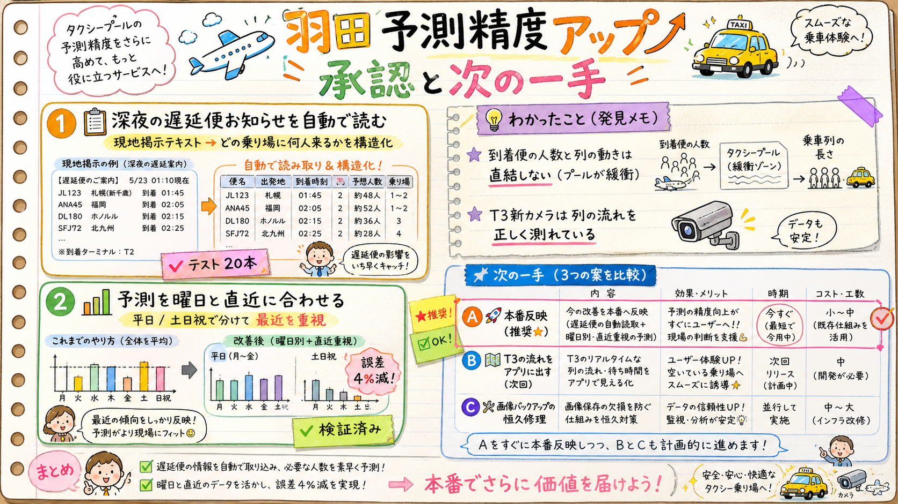

「画像が貯まってきたので精度を上げたい」の調査と実装の結果です。2ヶ月分のデータを検証して、効く改善2つを実装済み（テスト全緑）。反映の承認と、次に進める方向の選択をお願いします。

実装済反映待ち
プール現地の掲示（「ANA84 札幌便 0:48到着予定 71人 第4乗り場」など）を自動で構造化。どの乗り場に・何時に・何人来るかと、乗り場の客列人数（「第2乗り場 約1,400名」）が取れるように。
検証: 7週間で実際に掲示された84種類の文面すべてでテスト（20本）。読めない文面は誤読せず捨てる設計。
実装済反映待ち
列移動の予測（時間帯目安）を、平日と土日祝で分けて、最近2週間を重く見るように変更。土日に平日のカーブが出る問題が直り、季節変化にも追従。
検証: 直近28日のウォークフォワードで誤差(MAE) 0.419→0.401（昼帯 0.517→0.506）。出荷コードそのもので測定。
| 項目 | いつから | 変化 |
|---|---|---|
| 予測（時間帯目安） | 反映直後の更新から | 土日祝は土日祝のカーブに。直近の傾向を反映（見た目の形式は不変） |
| 遅延便データ | 次に掲示が出た深夜から | 配信データに「号別の未着便・人数」が載る（アプリ画面はまだ変わらない。表示は次の実装） |
| リスク | — | 低。既定動作は後方互換、読めない掲示は無視する設計。全720テスト緑 |
実装2つを本番反映する（推奨・私が実行）
ic-helper リポジトリへ push → Mac mini が自動で取り込み。今夜の掲示から遅延便データが貯まり始め、予測は次回更新から曜日対応に。
続けて「深夜遅延便の表示」or「T3の流れ表示」をアプリに実装
Aの土台の上に、乗務員に見える画面を作る（dev→承認→本番の通常フロー）。どちらを先にやるかも指定可。
画像バックアップの恒久修理の方式を決める
(C-1) システム設定で bash にフルディスクアクセスを付与（あなたのGUI操作1分・シンプル）／(C-2) 深夜ジョブをSSH経由に書き換え（私が実行・鍵設定の承認が必要）。
A と C は独立。「A と C-1」「A だけ」のような組み合わせ回答でOK。